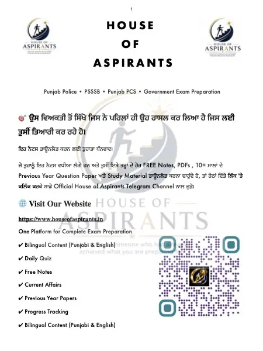

Summary
ਪਾਠ 14: ਸਮਾਸ-ਰਚਨਾ ਸ਼ਬਦ-ਰਚਨਾ ਦਾ ਭਾਵ ਭਾਸ਼ਾ ਦੇ ਸ਼ਬਦ ਮੂਲ ਰੂਪ ਵਿੱਚ ਵੀ ਹੋ ਸਕਦੇ ਹਨ ਅਤੇ ਹੋਰ ਸ਼ਬਦਾਂ ਜਾਂ ਅੰਸ਼ਾਂ ਨੂੰ ਜੋੜ ਕੇ ਬਣੇ ਹੋਏ ਵੀ। ਸ਼ਬਦ ਬਣਾਉਣ ਦੀਆਂ ਮੁੱਖ ਵਿਧੀਆਂ ਵਿੱਚ ਸਮਾਸ, ਅਗੇਤਰ ਅਤੇ ਪਿਛੇਤਰ ਸ਼ਾਮਲ ਹਨ। ਮੂਲ ਸ਼ਬਦ ਜਿਹੜਾ ਸ਼ਬਦ ਆਪਣੇ ਆਪ ਵਿੱਚ ਪੂਰਾ ਅਰਥ ਦੇਵੇ ਅਤੇ ਜਿਸ ਨੂੰ ਇਸ ਪਾਠ ਵਿੱਚ ਹੋਰ ਅਰਥਵਾਨ ਹਿੱਸਿਆਂ ਵਿੱਚ ਨਾ ਵੰਡਿਆ ਜਾਵੇ, ਉਹ ਮੂਲ
Download
Download Ch 14 - Part 1 (Punjabi) (PDF) - 2.6 MB, 7 pages, hosted on this site. No sign-up, no email wall and no redirect through a third party.
About this file
- File name:
ਸਮਾਸ-ਰਚਨਾ.pdf - Pages: 7
- Size: 2.6 MB
- Published: 5 October 2026
- Filed under: Study Material
Where this file sits
- Subject: Punjabi
- Language: Punjabi (ਪੰਜਾਬੀ)
- Chapter: Ch 14
- Part: Part 1 of 1
This page was generated automatically from content/study-material/punjabi/punjabi /ch 14/. Its subject, language and chapter come from the folders the file sits in, its part number from its place among the files beside it, and its title, slug and description from those. The page count and the summary were read out of the PDF itself - the file is the document.